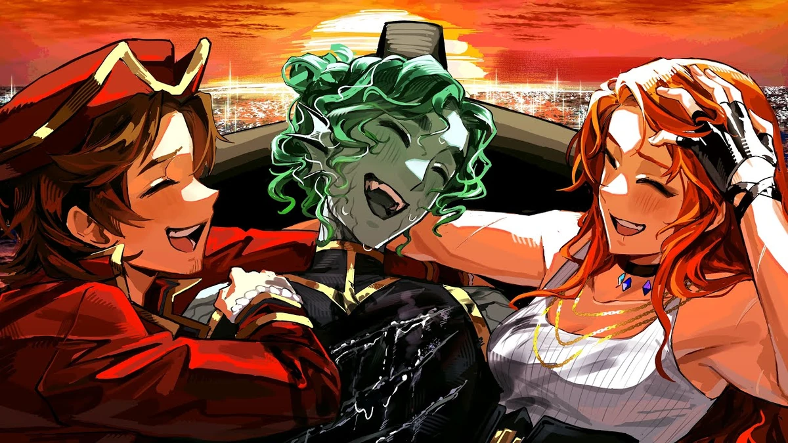
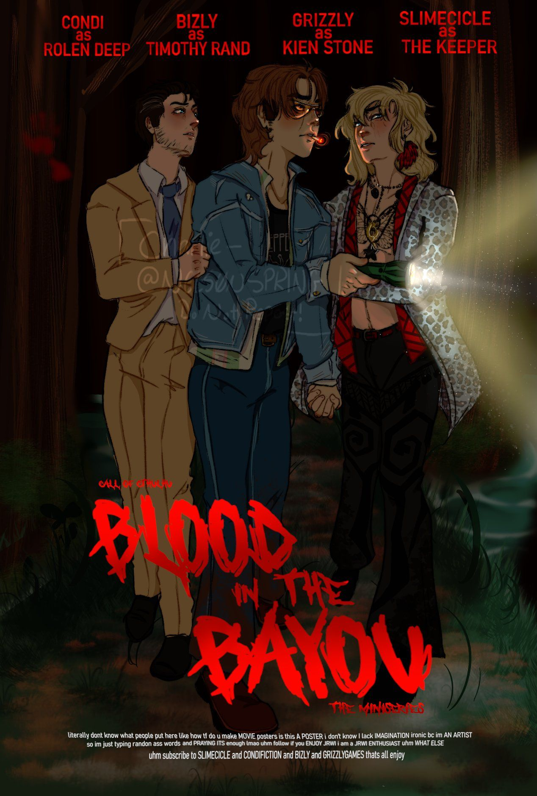

More about the Campaign
Just Roll with It is a D&D podcast run by 4 content creators- Charlie slimecicle, Grizzly Plays, Bizzly, and Condifiction. Starting in 2022, this enthralling D&D podcast has amassed major popularity. Though the main campaign is Riptide, with Grizzly being the DM, the podcast does have other campaigns that they air hosted by all different participants in the show. Currently as of the creation of this site, the Riptide campaign is on a 6-month hiatus for unknown reasons, though they are uploading from other campaigns. All 4 participants also create solo content that they upload regularly if you just can't get enough of your favorite goofballs. Personally, I've been listening to JRWI for almost 2 years, and they got me into D&D if that speaks anything to how good this podcast is. Seriously- if you don't know anything about it and you're into D&D, check it out.

Another Sucess
Along with Riptide, JRWI runs quite a few side campains as well that tend to be shorter and mostly only accesable through their Patrion. On of these campaigns that had major sucess was their campain "Blood in the Bayou"- a zombie appocolypse themed campaign run by Slimecicle that gaines so much popularity that merch was made for it had has been sold out twice since in premer in early 2023. Through campaigns like this the hosts of the podcast are able to do in-person game sesions that they record for the audience. Blood in the Bayou is a great example of how these campaigns help the creators, and it's also one of their best selling side campaigns. I haven't personally listened to it, but it's high on my to do list, especially with how much talk it got. Each DM has their own style of game play, and anything with Charlie as the DM is bound to be fun.
